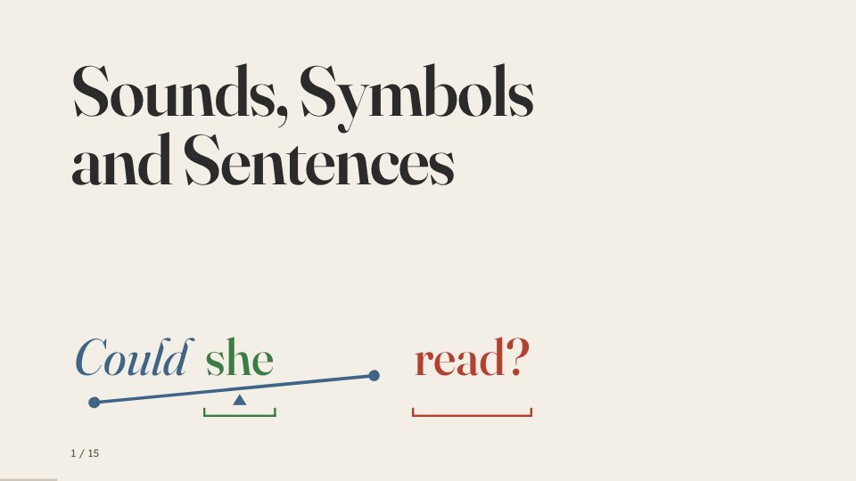
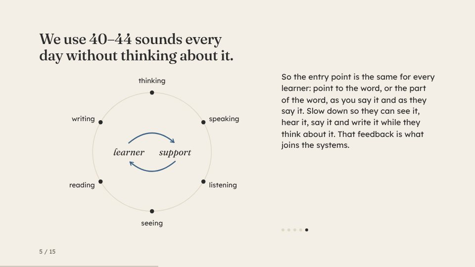
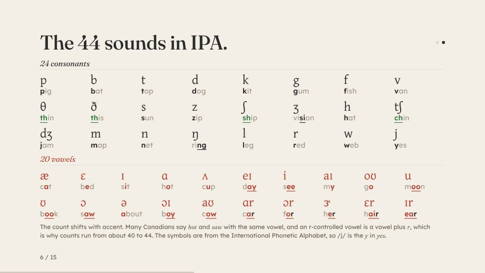
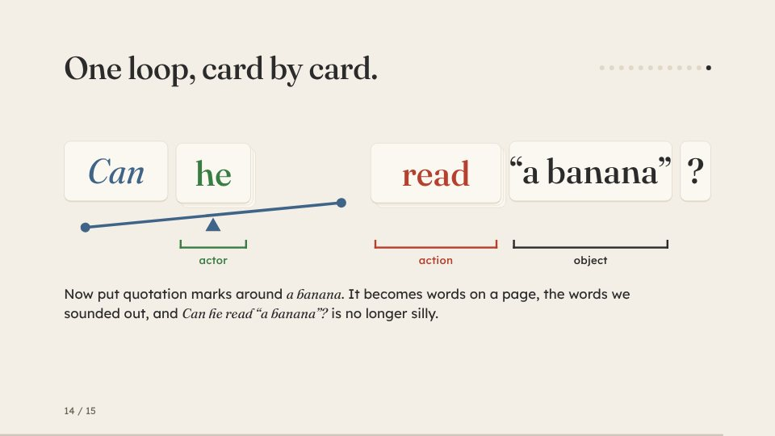

Session 1 · 15 slides
Sounds, Symbols and Sentences
This is not a program. It’s an exploration of ways to provide access, and an invitation to experiment with our methods and synthesize our understandings. The first session starts with how many sounds a voice can make and how we write them down, works through sound circles and one letter, one beat, and ends with a learning loop to run with one student this week.
Open the presentationDownload it to present offline (929 KB)
To move on, click or tap the right side of a slide, or press the right arrow or the space bar. The left third of a slide, or the left arrow, goes back. Many slides build a step at a time, and the ⤢ button, which shows when you move the mouse, fills the screen.
Handouts
- The 44 sounds and marking a wordTwo sides: the 44 sounds of English, each with a key word marked, and how to mark a word by hand.
- Operator cardsFold-over tent cards for the nine modals (can, could, will, would, shall, should, may, might and must), marked on one face and blank on the other, plus three blank cards.
- Using the operator cardsMaking the cards, running a loop, and marking a word by hand.
- Sentence cardsA demonstration set of 48 tent cards about reading and writing. Stand up an actor, an operator and an action, then move the operator to the front to turn the statement into a question.
- Verb-system cardsAdded after the session: 53 tent cards for the words that orbit the verb (every form of be, have and do, the modals, not and the n’t contractions, the semi-modals, the endings and to). The first page says which words can move to the front to make a question and gives flips to try.
- Action cards70 tent cards for the actions: the verbs in Dolch’s 1936 sight vocabulary, less the ones that are verb-system cards. The first page lists them and gives flips to try.
- Actor cards107 tent cards for actors and the acted-on: twelve personal pronouns and Dolch’s 95 nouns. The first page lists them and gives flips to try.
- Modal cards, first versionThe first version of the operator cards, from 8 October: the nine modals as fold-over tent cards, plus three blank cards. It boxes a doubled letter, like the ll of will, where the operator cards put a bar under it.
- Using the modal cardsThe instruction sheet that went with them.
Print them in colour. The card pages are made for card stock, and the instructions show how to fold them.